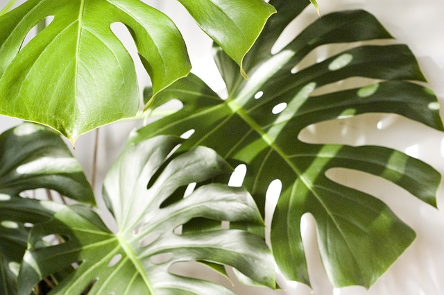
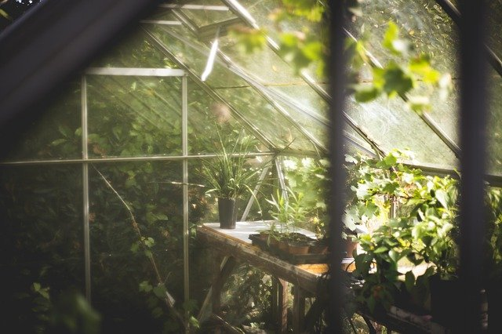

Plants have been a new hobby of mine because of this quarantine. Although I haven't bought any new plants I enjoy watching youtube
videos about plants. I would love to collect the Fiddle Leaf fig tree, String of Pearls, and a Bonsai tree. I've wanted a Bonsai tree
ever since I saw Mr. Miyagi trim one for Danielson in Karate Kid. I know that's not how you say his name, but I like it like that better.
I have a Monstera plant and I've named her Penelope. Is that lame of me to have named my plant? OH, and she has grown so many new leaves
she looks pretty happy, hopefully she doesn't get the quarantine blues.
